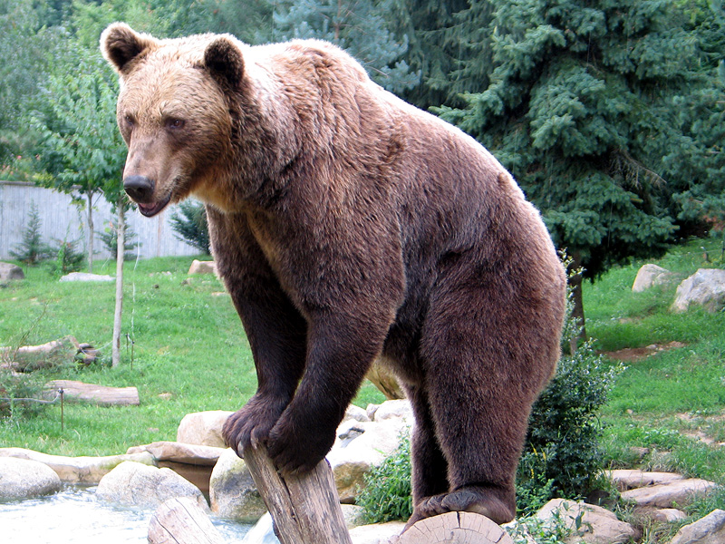

Bear


Bears are carnivoran mammals of the family Ursidae (/ˈɜːrsɪdiː, -daɪ/). They are classified as caniforms,
or doglike carnivorans. Although only eight species of bears are extant, they are widespread,
appearing in a wide variety of habitats throughout most of the Northern Hemisphere and partially in the Southern Hemisphere.
Bears are found on the continents of North America, South America, and Eurasia. Common characteristics of modern bears
include large bodies with stocky legs, long snouts, small rounded ears, shaggy hair,
plantigrade paws with five nonretractile claws, and short tails.
Wolf


The wolf (Canis lupus;[b] pl.: wolves), also known as the grey wolf or gray wolf, is a canine native to Eurasia and North America.
More than thirty subspecies of Canis lupus have been recognized, including the dog and dingo, though grey wolves, as popularly understood,
include only naturally-occurring wild subspecies. The wolf is the largest wild extant member of the family Canidae,
and is further distinguished from other Canis species by its less pointed ears and muzzle,
as well as a shorter torso and a longer tail. The wolf is nonetheless related closely enough to smaller Canis species,
such as the coyote and the golden jackal, to produce fertile hybrids with them.
Lion


The lion (Panthera leo) is a large cat of the genus Panthera, native to Sub-Saharan Africa and India.
It has a muscular, broad-chested body; a short, rounded head; round ears; and a dark, hairy tuft at the tip of its tail.
It is sexually dimorphic; adult male lions are larger than females and have a prominent mane. It is a social species, forming groups called prides.
A lion's pride consists of a few adult males, related females, and cubs. Groups of female lions usually hunt together, preying mostly on medium-sized and large ungulates.
The lion is an apex and keystone predator.
Leopard


The leopard (Panthera pardus) is one of the five extant cat species in the genus Panthera.
It has a pale yellowish to dark golden fur with dark spots grouped in rosettes.
Its body is slender and muscular reaching a length of 92–183 cm (36–72 in) with a 66–102 cm (26–40 in) long tail
and a shoulder height of 60–70 cm (24–28 in). Males typically weigh 30.9–72 kg (68–159 lb), and females 20.5–43 kg (45–95 lb).
Tiger


The tiger (Panthera tigris) is a large cat and a member of the genus Panthera native to Asia.
It has a powerful, muscular body with a large head and paws, a long tail and orange fur with black,
mostly vertical stripes. It is traditionally classified into nine recent subspecies, though some recognise only two subspecies,
mainland Asian tigers and the island tigers of the Sunda Islands.